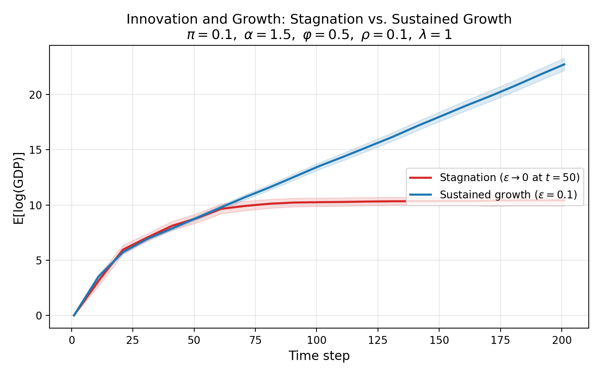

Stefano Blando · Andrea Vandin · Giorgio Fagiolo
The economy is a T×T grid of islands — each a productive niche with fitness increasing with distance from the centre. 20 agents choose each period whether to mine, imitate, or explore. The tension between safe exploitation and risky exploration generates endogenous growth.
Island brightness encodes fitness (distance from centre). Agents shown in blue (Miners), green (Imitators), amber (Explorers). Green arcs = skill transfer during imitation. GDP mini-chart tracks aggregate output in real time.
Stays on current island. Output ∝ island fitness × own skill. Skills accumulate with each step.
Moves to the best visible agent's island and attempts skill transfer with probability φ.
Searches for new islands. Switches to a random island with probability ε each period.
| Symbol | Meaning | Baseline |
|---|
Standard Monte Carlo uses a fixed number of runs with no guarantee on estimation quality. MultiVeStA applies sequential statistical model checking: it runs simulations adaptively, stopping only when the 95% confidence interval on E[logGDP] is narrower than δ = 0.05 at every time step. This provides a formal precision guarantee — the sample size is determined by the data, not by the experimenter.
Run MultiVeStA analysis interactively. Select a parameter, choose values to compare, and watch the sequential sampling converge. Select a parameter, choose values, and watch MultiVeStA's sequential sampling converge in real time.
AGR peaks at ε ≈ 0.1: moderate exploration maximises long-run growth. Zero exploration → stagnation. Full exploration → wasted effort.
Convergence (δ=1) is governed by output variance. Only low-variance regimes converge within δ=0.05.
The refactored MATLAB model reproduces all stylized facts of Fagiolo & Dosi (2003).

eval obsAtStep(x; logGDP) in [1..201 step 10] with confidence 0.95 and delta 0.05;
eval obsAtStep(201.0; AGR_total) with confidence 0.95 and delta 0.05;